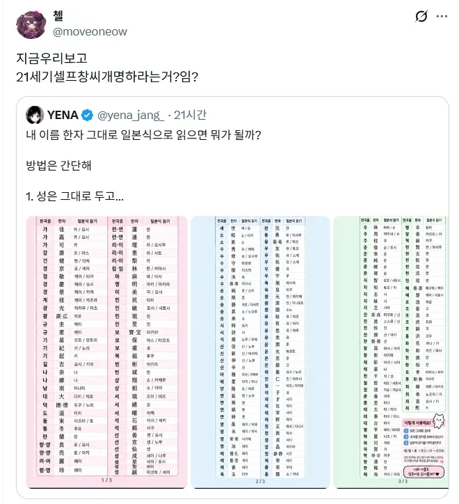
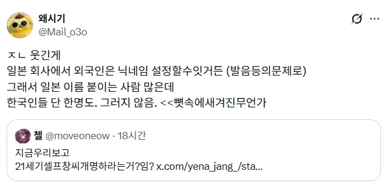
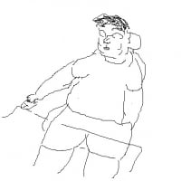

외국가서 영어이름 짓기 : 왠지 현지에서 적응할 때 필수일 거 같음
일본어로 이름 짓기 : 일제시대가 생각남


외국가서 영어이름 짓기 : 왠지 현지에서 적응할 때 필수일 거 같음
일본어로 이름 짓기 : 일제시대가 생각남
강건길
이누쿠소 쿠라에(개똥이나 쳐먹어라)
실제로 창씨개명때 좆까라고 이렇게 제출했던 조선인이 있었다
존나 많았다
유희의 민족
쿠로다 규이치~ 흑전우일~
우리 회사 부장은 일본에 20년 넘게 살았고, 부인도 한국인인데 자기 이름 일본식으로 개명하고 자식들도 일본이름 붙여줬음 … 한국인 사원이랑 이야기할 때도 굳이 일본어로 보내고 (빡치면 한국어로 보냄), 이정도해야 일본에서 먹고사나 싶었음. 보통 일본인들은 성을 주로 불러서 이름을 굳이 일본식으로 바꿀 필요가 없기도 하고. 다만 한국인 사원 많아서 김씨 3명이면 キムさん、キンさん、이름さん으로 구분하기도 함. 약간 회사에 스즈키상 4명이상이면 이름으로 부르는것처럼
일본어 뭐라고 쓴거야?
キムさん、キンさん
오호 감사
카미 사마
이누쿠소 쿠라에
생년월일따서 인디언식 이름 짓기처럼 재미로나 해볼듯ㅋㅋ
텐노헤이카로 바꾸면 인정한다
야마모또 없냐~
덴노헤이카
히로히토 미치노미야
굴욕적이다잇!
거의 똑같은데? ㅋㅋㅋ
영어로 바꾸는것도 븅신같지 뭐
테드창 네이놈
정상적으로 초중고를 나왔다면 일본이름으로 바꾸는거랑 영어이름으로 바꾸는게 얼마나 큰 차이가 있는지 알거임. 단순히 재미가 아니라 우리의 슬픈 과거 역사를 개무시하고 조롱하는 행위임
걍 일본어 처음 배우면 젤먼저 해보지 않음?
맞음ㅋㅋ
애초에 우리 이름부터가 신라시대에 중국식으로 죄다 창씨개명 당한 이름인데 뭔 의미가 있나 싶다 ㅋㅋ
삼국시대때 이름들 오히려 더 잘 보존한 근본이름은 백제 영향받은 일본식 이름이 더 가까운데 ㅋㅋㅋ
와~ 똑똑한 개붕이의 일침! 정말 대단한 걸?

우리문자가 없어서 한자 빌려다 쓴걸 창씨개명이라고?
한자 그대로 일본식 발음으로만 바꿔 쓰는건 상관없지 않나 싶어 알아봤는데... 실제 창씨개명때 원칙이 이름자 바꾸는건 한국식 한자에 일본식 발음으로 바꾸는게 기본이었다고 하네... 한국식 성씨는 절대 못쓰게 했다고 하고. 결론은 21세기 창씨개명은 개명부분은 과거와 똑같다고 보임. 성씨는... 뭐 이런 논란에 성씨 그대로 둔다는게 회피할 변명거리는 안되겠네
오레코소가 미야모토 무사시다!
허키 시바세키
회사에서 영어 닉네임으로 부르는데
Nakamura 로 바꾸고 싶다고 하니까 그건 좀 하고 반려당함
박고 빨아 죽여주마